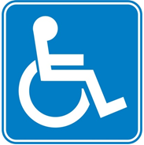
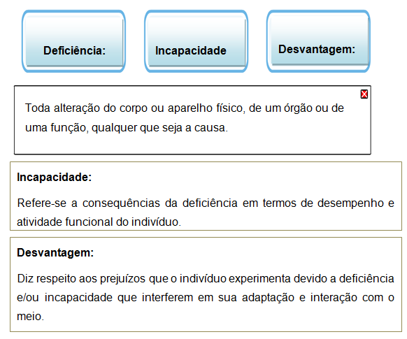
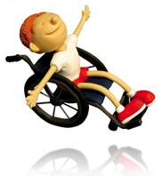

Olá pessoal,
Sejam bem vindos a aula 4 do Módulo do Educação Inclusiva: Introdução ao Atendimento Educacional Especializado.
Aproveite esta aula, nela iremos estudar sobre o Atendimento Educacional Especializado para estudantes com Deficiência Física
Boa aula!
ATENDIMENTO EDUCACIONAL ESPECIALIZADO PARA ALUNOS COM DEFICIÊNCIA FÍSICA
Fonte: http://escolaeemas.blogspot.com.br/2012/04/12-dia-do-curso-de-formacao-no-aee.html
Texto base para essa aula:
Disponível em: http://portal.mec.gov.br/seesp/arquivos/pdf/aee_df.pdf
Ou no material de apoio
Cartilha MEC – Atendimento Educacional Especializado – Deficiência Física
Autoras: Carolina R. Schirmer, Nádia Browning, Rita Bersch ,Rosângela Machado.
DEFICIÊNCIA FÍSICA
O termo deficiência física na modalidade escolar refere-se ao comprometimento dos membros associados ao sistemas musculares e ósseos.
“São complicações que levam à limitação da mobilidade e da coordenação geral, podendo também afetar a fala, em diferentes graus. As causas são variadas - desde lesões neurológicas e neuromusculares até má-formação congênita - ou condições adquiridas, como hidrocefalia (acúmulo de líquido na caixa craniana) ou paralisia cerebral.”

Para saber mais leia o artigo completo acessando:
http://revistaescola.abril.com.br/formacao/deficiencia-fisica-inclusao-636413.shtml
Pesquisando sobre doenças no âmbito da saúde existe uma classificação das consequências das doenças (CIDID), que descrevem os conceitos de deficiência sobre a perspectiva da desvantagem, incapacidade e deficiência.
Clique para saber mais
Inserir efeito /bt_flutuante
Os principais tipos de deficiência física, segundo o Decreto nº 3.298 de 20 de dezembro de 1999, são a paraplegia, tetraplegias e hemiplegia. Ainda são consideradas as amputações, os casos de paralisia cerebral e as ostomias (aberturas abdominais para uso de sondas).
O ALUNO COM DEFICIÊNCIA FÍSICA NO AMBIENTE ESCOLAR
As principais barreiras enfrentadas por alunos com deficiência, em grande maioria está relacionada a dificuldade de locomoção no ambiente escolar, a estrutura das escolas não atendem as necessidades básicas desses alunos.
Inserir efeito Folhinha raspadinha.
A dificuldade de mobilidade e locomoção está relacionada ao fracasso escolar desses estudantes. A motricidade humana está relacionada a vários fatores emocionais e sensoriais dos alunos, a execução de simples movimentos desencadeiam uma performance dentro do nosso corpo e a falta de certos movimentos podem afetar o pleno desenvolvimento.
Finalizar efeito Folhinha raspadinha.
O movimento dinâmico é uma atuação autônoma do sujeito, alguns pesquisadores mostram essa dinâmica afirmando que aprendemos a nos movimentar para aprender e compreender o mundo em que estamos inseridos.
Para compreendermos melhor a relação do movimento com a aprendizagem satisfatória, faz necessário compreender o processo de desenvolvimento sensoriomotor. (O trecho da idéia de continuidade, o que não existe) (Exemplificar o que é o movimento sensório motor)???

FIQUE DE OLHO NAS REFERÊNCIAS
Fonte:
http://johannaterapeutaocupacional.blogspot.com.br/2010/04/adaptacoes-fisicas-para-aluno.html
Sugestão: Assista o vídeo para saber mais sobre Motricidade:
Responsáveis: Milvane Regina Eustáquia Gomes Vasconcelos, Daniela Iara, Joelma Xavier
Centro de Educação a Distância do Ceará - CED